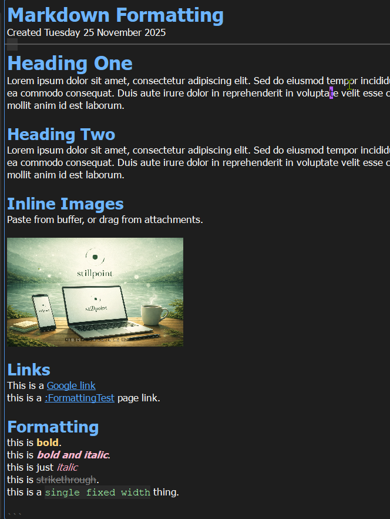
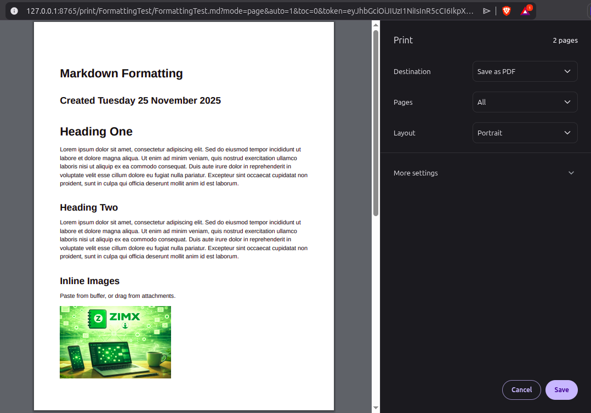

Markdown that stays readable for years.
StillPoint keeps the editor simple and visual, so you can write without thinking about syntax. The formatting tools make Markdown feel natural and durable, while fast jumpers keep even a large vault close at hand.

Plain text that still looks good.
StillPoint stores every page as Markdown on disk. That means your notes stay lightweight, portable, and future-proof. But the editor keeps it clean: headings, lists, and emphasis are displayed visually so the writing feels calm and readable.
Readable anywhere
Markdown opens in any editor. Your notes do not depend on a proprietary format.
Visual formatting
Headings and lists render as you type. You get structure without noisy markup.
Stable over time
Plain files remain accessible even years later. Your knowledge base ages well.
Print-ready output, straight from your notes.
When it’s time to share, StillPoint renders your Markdown to clean HTML and hands it to the browser for printing. You get predictable pagination, crisp text, and image-perfect output without fighting print settings.
Single-page export
Print the active note as a polished PDF in seconds.
Tree bundles
Merge a page and its descendants into one ordered document.
Print-safe styling
A dedicated print stylesheet keeps output consistent and readable.
Inline images
Screenshots and diagrams render exactly where you expect.
Write in Markdown, export like a finished document.

Format, find, and jump without leaving the page.
You are not stuck hand-typing Markdown. StillPoint provides fast formatting tools so you can stay in flow, especially for bold, italics, and headings.
Navigation is part of the editor too. The quick vault picker opens the tree over your page. The heading picker jumps within long documents. The recent-page switcher moves back through active work, and the command palette puts application actions in one searchable place.
Write first, format when it helps. StillPoint keeps the editor calm and readable.
| Action | Shortcut |
|---|---|
| Bold | Ctrl+B |
| Italic | Ctrl+I |
| Highlight | Ctrl+U |
| Inline code | Ctrl+T |
| Headings (levels 1-5) | Ctrl+1 to Ctrl+5 |
| Remove heading | Ctrl+7 |
| Clear formatting | Ctrl+9 |
| Quick vault picker | Ctrl+Alt+V |
| Heading picker | Ctrl+Alt+T |
| Recent-page switcher | Ctrl+Tab |
| Command palette | Ctrl+Shift+P or Alt+G |
Move text or whole pages without leaving the editor.
The editor context menu now groups move actions together. Use
Move -> Move Text… for selected text, or
Move -> Move Page… to relocate the current page with the standard move dialog.
In vi mode, m follows the same model: with a selection it moves text,
and with no selection it opens the move-page dialog for the current page.
The editor is the center of the Knowledge IDE.
StillPoint is built for quiet work. You can edit quickly, see structure at a glance, and trust that the page on disk will always be plain Markdown you can read anywhere. Every deeper tool—from tasks and maps to terminals and agents—works around that source rather than replacing it.